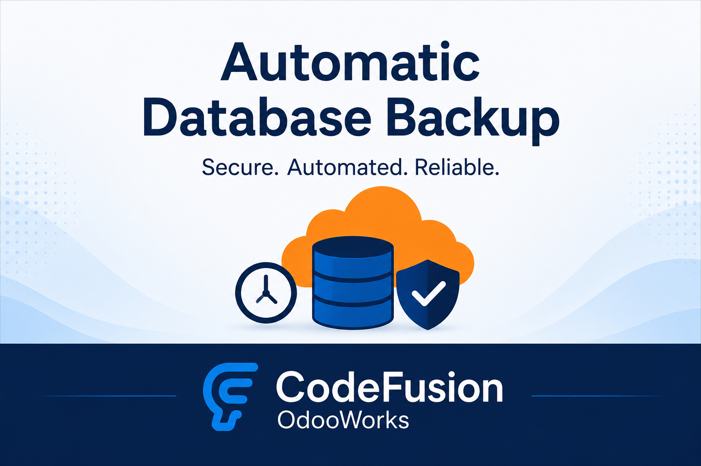

🖼️ Screenshots


Backup Configuration
The Automatic Database Backup module enables scheduled and manual database backups directly from your Odoo interface. Never lose your data again — keep your system safe with automatic daily, weekly, or custom interval backups.

Backup Configuration
Need help setting up backups or want custom features like cloud integration? We provide end-to-end Odoo development and customization.
Stay safe, stay backed up!